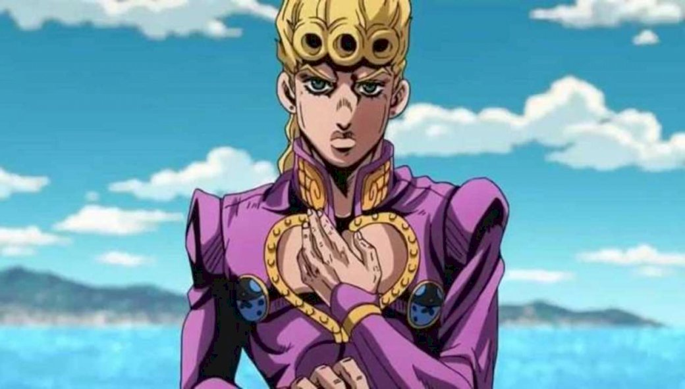

Jojo- Golden Wind

| Início JOJO parte 1 JOJO parte 2 JOJO parte 3 JOJO parte 4 JOJO parte 5 JOJO parte 6 JOJO parte 7 JOJO parte 8 |


Uma característica definidora de Giorno, e compartilhada entre seus pares através dele, é sua determinação (覚悟kakugo ) ; algo que pode ser descrito como sua capacidade de tomar decisões importantes sem hesitação e levá-las até o fim, mesmo diante da dor, tristeza e tragédia. Ao longo da Parte 5, a determinação de Giorno é tal que, no calor da batalha, ele frequentemente está disposto a se machucar se isso levar a uma situação vantajosa.
Koichi Hirose chega em Nápoles na Itália atendendo a um pedido de Jotaro Kujo que é de investigar a vida de Haruno Shiobana, também conhecido como Giorno Giovanna, filho de Dio.
Giorno expressa seu sonho de crescer dentro da máfia para se tornar um Gangstar (uma fusão das palavras Gangster e Superstar). Giorno é então atacado por Luca, um membro da gangue dominante de Nápoles, Passione, que morre ao ter sua agressão refletida contra si próprio graças ao poder do Stand de Giorno, Golden Experience.